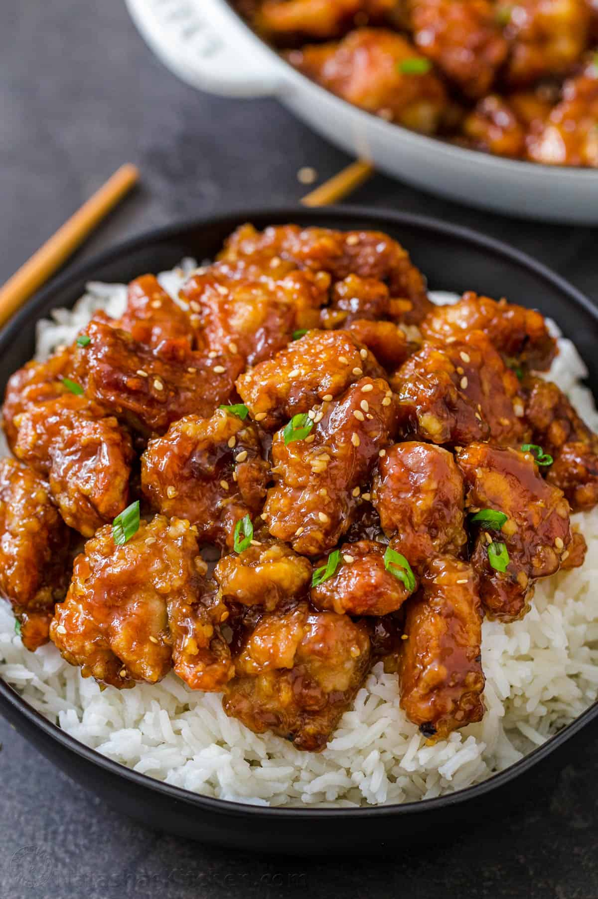

General Tao Chicken

Description
General Tao Chicken is such traditional Chinese dish that every one love. This recipe is battered crispy chicken pieces tossed in a sweet and spicy sauce. A take-out classic that is simple to make at home and even better than what you would get in a restaurant!
Ingredients
Chicken ingredients
- 1.5 lbs boneless & skinless chicken thighs
- 2 eggs
- salt and pepper
- 1/2 cup all purpose flour
- 1/2 cup corn starch
- vegetable oil
- 2 teaspoons sesame seeds
- 2 tablespoons green onions
Sauce ingredients
- 2 teaspoons minced fresh garlic
- 3/4 cup low sodium chicken broth
- 2 tablespoons hoisin sauce
- 2 tablespoons brown sugar
- 1/4 cup low sodium soy sauce
- 1 tablespoon corn starch
Steps
- Place the eggs in a bowl; add salt and pepper to taste.
- Mix together the flour and corn starch and place in a shallow bowl or on a plate.
- Heat 3 inches of oil in a deep pot to 350 degrees F.
- Dip each piece of chicken into the egg mixture, then coat in the flour mixture. Repeat the process for all of the chicken pieces.
- Fry 8-9 pieces of chicken at a time for 5 minutes or until browned. Repeat with all the remaining chicken.
- While the chicken is cooking, make the sauce.
- Heat the 2 teaspoons of vegetable oil in a saucepan over medium heat.Add the garlic and crushed red pepper flakes and cook for 30 seconds.
- Whisk together the chicken broth, hoisin sauce, brown sugar, soy sauce and corn starch.
- Add the liquid mixture to the pan and bring to a simmer. Cook for 2-3 minutes or until sauce has thickened.
- Add the chicken pieces to the pan and toss to coat with the sauce. Sprinkle with sesame seeds and green onions and serve.